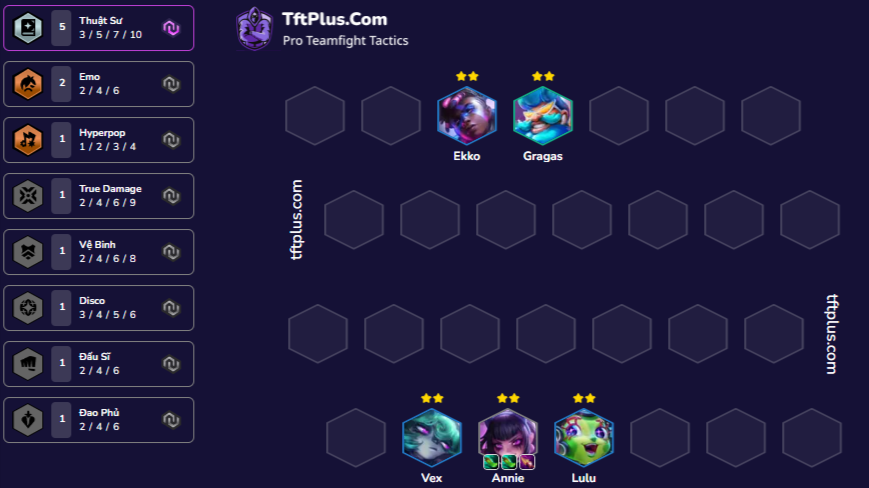
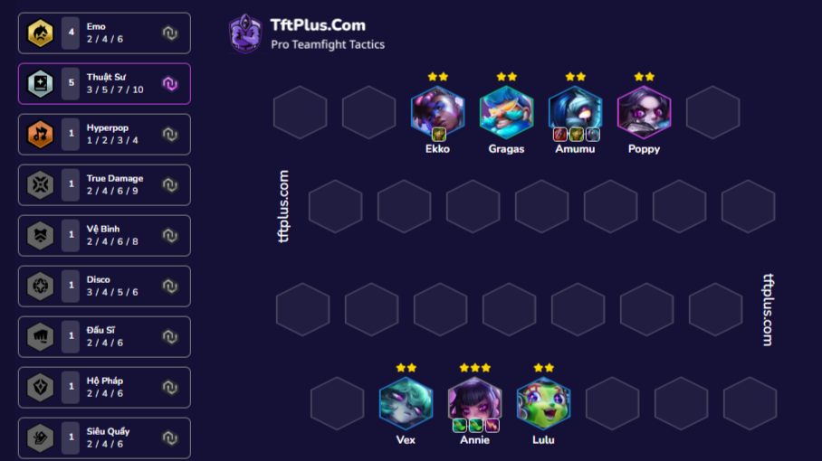
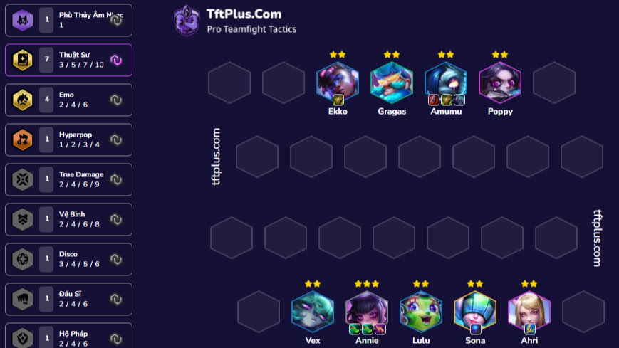

Dây là 1 bài cần sự may mắn và nhân phẩm khi phải lên được annie 3 không thì việc out top là ko thể ngăn cản def đầu cần annie siêu sao gì cũng được nếu không ra bỏ đi xoay sang bài khác

Bài hết form với chess 7 khi kẹp thêm được 3 EMO nếu ra siêu sao EMO thì kẹp thêm thuật sư ez mà rất flexible

Nếu vẫn thua thì cố gắng tích tiền up chess 9 và đạt cảnh giới đồ tank thì cho ekko hoặc amumu

Bài chỉ khó khi kiểm soát về kinh tế của bạn không tốt hay có hơn 2 người trong lobby cũng đang triển khai bài này khiến annie không ra lúc đó hay suy nghĩ đến việc chuyển sang bài khác
Chi tiết cách ghép đồ ở đây cho bạn nào cần